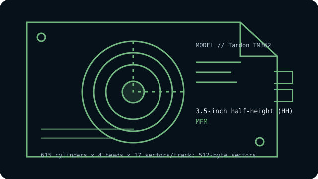

[ INDIVIDUAL COMPONENT // HARD DISK DRIVES ]
Tandon TM362
21 MB-class 3.5-inch half-height MFM drive with ST-506 interface. This entry describes the named model, not every drive with similar markings.

IDENTIFICATION: Record the complete label, suffix, revision and controller details before handling. Do not substitute a related model’s geometry or encoding based on appearance alone.
Model specifications
| Exact model | Tandon TM362 |
|---|---|
| Catalog classification | MFM and early magnetic drives |
| Capacity | Approximately 21 MB formatted |
| Form factor | 3.5-inch half-height (HH) |
| Interface | ST-506-compatible, separate control/data cables |
| Recording method | MFM |
| Drive geometry | 615 cylinders × 4 heads × 17 sectors/track; 512-byte sectors |
| Host-controller compatibility | Requires an MFM ST-506 controller supporting this geometry, correctly wired 34-pin control/20-pin data cables, drive select and termination. Confirm the controller’s CHS/format support; it is not a 3.5-inch IDE drive. |
| Historical caveat | The TM362 belongs to Tandon’s early 3.5-inch MFM family and shares family documentation with the TM262, but its 3.5-inch form factor differs from the 5.25-inch TM262. Other suffixes and related models can use different encoding or geometry. |
Host-controller compatibility
Requires an MFM ST-506 controller supporting this geometry, correctly wired 34-pin control/20-pin data cables, drive select and termination. Confirm the controller’s CHS/format support; it is not a 3.5-inch IDE drive.
- Confirm the full model and revision on the label, controller make/model, cable pinouts, power requirements, drive-select jumpers, and termination before connection.
- Verify that the controller supports the exact encoding, CHS geometry and sector size shown above; controller and BIOS translations can vary between systems.
- Do not attach this drive directly to modern SATA, IDE/ATA, SCSI or USB ports. Any bridge must explicitly support the legacy ST-506/ST-412 signaling and drive format; connector resemblance is not electrical compatibility.
Historical and preservation notes
“3.5-inch” describes the drive’s physical form factor, not an ATA connector. ST-506 drives use separate control and data cabling and require a compatible legacy controller.
These drives are decades old. If data matters, avoid exploratory low-level formatting, repeated power cycling or writes; preserve the original controller settings and seek qualified recovery help for a failing mechanism. Treat any catalog capacity as approximate until the original manual and host configuration are checked.
Sources & further reading
- Tandon TM362/TM262 Product Specification and User Manual (archival scan)Primary family manual documenting the TM362 product specifications.
- Tandon TM362 model geometry and setupIndependent model-specific reference for the 3.5-inch MFM/ST-506 configuration.
Use the model-specific documentation for the full label and revision. Third-party archival listings are useful cross-references but may summarize a family or use rounded capacity values.